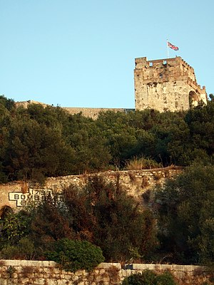

| Ṭāriq ibn Ziyād
طارق بن زياد
|
| Born |
c. 670 CE
North Africa
|
|
Died
|
c. 720 (aged 49–50)
Damascus, Syria
|
| Allegiance |
Umayyad Caliphate
|
| Battles/wars |
Conquest of Hispania
Battle of Guadalete
|
| Other work |
Governor of Tangier
Governor of Al-Andalus
|
Ṭāriq ibn Ziyād (Arabic: طارق بن زياد),
also known simply as Tarik in English,
was a Berber commander who served the Umayyad Caliphate and initiated
the Muslim Umayyad conquest of Visigothic Hispania (present-day Spain and Portugal)
in 711–718 AD.
He led an army and crossed the Strait of Gibraltar from the North African coast,
consolidating his troops at what is today known as the Rock of Gibraltar.
The name "Gibraltar" is the Spanish derivation of the Arabic name
Jabal Ṭāriq (جبل طارق), meaning "mountain of Ṭāriq",
which is named after him.
History
According to Ibn Abd al-Hakam (803–871), Musa ibn Nusayr appointed Ṭāriq governor of Tangier after its conquest in 710-711[11] but an unconquered Visigothic outpost remained nearby at Ceuta, a stronghold commanded by a nobleman named Julian, Count of Ceuta.
After Roderic came to power in Spain, Julian had, as was the custom, sent his daughter, Florinda la Cava, to the court of the Visigothic king for education. It is said that Roderic raped her, and that Julian was so incensed he resolved to have the Muslims bring down the Visigothic Kingdom. Accordingly, he entered into a treaty with Ṭāriq (Mūsā having returned to Qayrawan) to secretly convoy the Muslim army across the Straits of Gibraltar, as he owned a number of merchant ships and had his own forts on the Spanish mainland.[12]
On or about April 26, 711, the army of Ṭāriq Bin Ziyad, composed of recent Berber converts to Islam, was landed on the Iberian peninsula (in what is now Spain) by Julian.[a] They debarked at the foothills of a mountain which was henceforth named after him, Gibraltar (Jabal Tariq).[13]
Ṭāriq's army contained about 7,000 soldiers, composed largely of Berber stock but also Arab troops.[14] Roderic, to meet the threat of the Umayyads, assembled an army said to number 100,000,[15] though the real number may well have been much lower.[16] Most of the army was commanded by, and loyal to, the sons of Wittiza, whom Roderic had brutally deposed.[17] Ṭāriq won a decisive victory when Roderic was defeated and killed on July 19 at the Battle of Guadalete.[1][18]
Ṭāriq Bin Ziyad split his army into four divisions, which went on to capture Córdoba under Mughith al-Rumi, Granada, and other places, while he remained at the head of the division which captured Toledo. Afterwards, he continued advancing towards the north, reaching Guadalajara and Astorga.[1] Ṭāriq was de facto governor of Hispania until the arrival of Mūsā a year later. Ṭāriq's success led Musa to assemble 12,000 (mostly Arab) troops to plan a second invasion, and within a few years Ṭāriq and Musa had captured two-thirds of the Iberian peninsula from the Visigoths.[19][20]
Both Ṭāriq and Musa were simultaneously ordered back to Damascus by the Umayyad Caliph Al-Walid I in 714, where they spent the rest of their lives.[18] The son of Musa, Abd al-Aziz, who took command of the troops of al-Andalus, was assassinated in 716.[2] In the many Arabic histories written about the conquest of southern Spain, there is a definite division of opinion regarding the relationship between Ṭāriq and Musa bin Nusayr. Some relate episodes of anger and envy on the part of Mūsā that his freedman had conquered an entire country. Others do not mention, or play down, any such bad blood. On the other hand, another early historian, al-Baladhuri, writing in the 9th century, merely states that Mūsā wrote Ṭāriq a "severe letter" and that the two were later reconciled.[21]

Sources
- Pascual de Gayangos y Arce, The History of the Mohammedan Dynasties in Spain. vol. 1. 1840. English translation of al-Maqqari.
- al-Baladhuri, Kitab Futuh al-Buldan, English translation by Phillip Hitti in The Origins of, the Islamic State (1916, 1924).
- Anon., Akhbār majmūa fī fath al-andalūs wa dhikr ūmarā'ihā. Arabic text edited with Spanish translation: E. Lafuente y Alcantara, Ajbar Machmua, Coleccion de Obras Arabigas de Historia y Geografia, vol. 1, Madrid, 1867.
- Anon., Mozarab Chronicle.
- Ibn Abd al-Hakam, Kitab Futuh Misr wa'l Maghrib wa'l Andalus. Critical Arabic edition of the whole work published by Torrey, Yale University Press, 1932. Spanish translation by Eliseo Vidal Beltran of the North African and Spanish parts of Torrey's Arabic text: "Conquista de Africa del Norte y de Espana", Textos Medievales #17, Valencia, 1966. This is to be preferred to the obsolete 19th-century English translation at: Medieval Sourcebook: The Islamic conquest of Spain
- Enrique Gozalbes Cravioto, "Tarif, el conquistador de Tarifa", Aljaranda, no. 30 (1998) (not paginated).
- Muhammad al-Idrisi, Kitab nuzhat al-mushtaq (1154). Critical edition of the Arabic text: Opus geographicum: sive "Liber ad eorum delectationem qui terras peragrare studeant." (ed. Bombaci, A. et al., 9 Fascicles, 1970–1978). Istituto Universitario Orientale, Naples. French translation: Jaubert, P. Amédée, trans. & ed. (1836–1840). Géographie d'Édrisi traduite de l'arabe en français d'après deux manuscrits de la Bibliothèque du roi et accompagnée de notes (2 Vols). Paris: L'imprimerie Royale. {{cite book}}: |first= has generic name (help).
- Ibn Taghribirdi, Nujum al-zahira fi muluk Misr wa'l-Qahira. Partial French translation by E. Fagnan, "En-Nodjoum ez-Zâhîra. Extraits relatifs au Maghreb." Recueil des Notices et Mémoires de la Société Archéologique du Département de Constantine, v. 40, 1907, 269–382.
- Ibn Khallikan, Wafayāt al-aʿyān wa-anbāʾ abnāʾ az-zamān. English translation by M. De Slane, Ibn Khallikan's Biographical dictionary, Oriental Translation Fund of Great Britain and Ireland, 1843.
- Ibn Idhari, Kitāb al-bayān al-mughrib fī ākhbār mulūk al-andalus wa'l-maghrib. Arabic text ed. G.S. Colin & E. Lévi-Provençal, Histoire de l'Afrique du Nord et de l'Espagne intitulée Kitāb al-Bayān al-Mughrib, 1948.